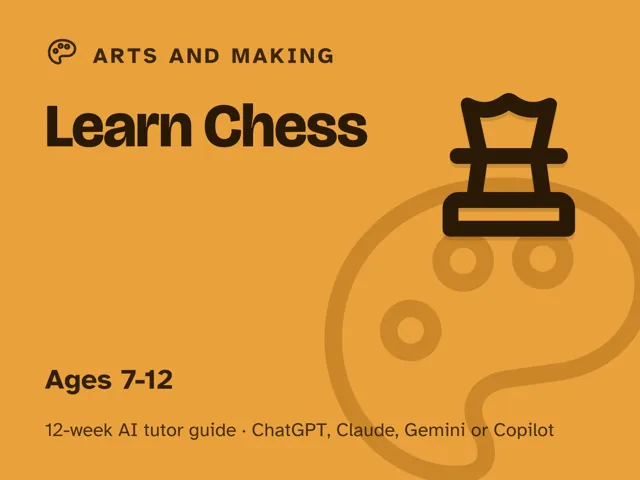
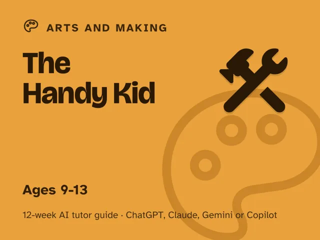

The Handy Kid
$29Instant download: a PDF to read, a browser copy, and the AI-tutor file you hand straight to any AI assistant.Buy it on Etsy →
Take the free placement check first: 15 minutes, and it names the week to start at.
Turn "can I try that" into real, earned competence. This is a done-for-you, 12-week plan for guiding a 9–13-year-old from meeting a real toolbox for the first time to measuring, driving a screw straight, sanding a smooth edge, fixing a wobbly chair, and building a real project they demo to the family, using an AI tutor to explain and coach while you stay firmly in charge of anything sharp, powered, or electrical. You do not need to be handy, and you do not need to have ever used an AI chat assistant before. You just need to lead one fully-scripted ~60-minute session a week and be right there.
What you get
- 12 deep weekly sessions, each fully scripted end to end: a plain-language concept, a concrete worked example, a minute-by-minute session plan with the AI-tutor prompts built in, a "show me" checkpoint, common mistakes to watch for, and practice, with no expertise needed from you.
- A "Never used an AI chat assistant? Start here" onboarding that takes a complete beginner from zero to ready in about five minutes. A free AI assistant is all you need, no paid plan required.
- A parent/teacher orientation: how to sit beside a learner using AI, why the adult stays the leader and the AI is the tutor, and exactly what your one ~60-minute session a week looks like, plus the one safety rule that never bends.
- Guardrails built into every session: each weekly launch prompt has the AI ask before it tells, and holds the hard line that the adult handles or closely guides anything sharp, powered, or electrical, so the AI never suggests a child do those steps alone.
- Four rescue prompts in the front matter for when the learner is stuck or frustrated, is bored, or is just following along, and for when the AI (or you) starts doing the hands-on part for them.
The 12 weeks
- Welcome to the Workshop: the one rule and a real toolbox tour
- Measuring and Marking: measure twice, cut once
- How Hand Tools Work: the physics behind a hammer, screwdriver, and pliers
- Driving a Screw: straight, true, and by hand
- Fastening Things Together: glue, clamps, nails, and screws
- Your First Small Build: a real object from a real plan
- Sanding and Finishing: smooth edges, even coats
- Fixing Something Wobbly: diagnose and repair something real at home
- Taking Care of Your Tools: clean, organize, store
- Project Week I: Plan It (a real project, scoped and signed off)
- Project Week II: Build It
- Family Demo Day: show it off, choose what's next
Who it's for
Parents, teachers, and homeschoolers guiding a learner aged roughly 9–13 who's ready to build real competence with real tools: not a supervised craft kit, but a genuine step toward self-reliance. No handyman background needed, and no AI experience needed. Your job is leading one scripted ~60-minute session each week and standing right there, and the AI tutor does the explaining.
Why this instead of a free chatbot
A raw chatbot can describe how to use a power saw to a nine-year-old just as casually as it describes a screwdriver, which is exactly the gap this pack closes. This pack ships the structure and guardrails a chatbot lacks: a real 12-week arc that builds from safe hand tools to a finished project, a tutor that questions before it instructs, a hard rule that keeps anything sharp, powered, or electrical firmly in the adult's hands, and checkpoints that prove the child can do their part themselves. Curriculum + guardrails + a way to see progress. That's the difference.
FAQ
- Do I need to be handy myself? No. The AI tutor explains every tool and step in plain language; you lead by staying present and doing the "show me" checkpoint. Every session comes with the exact prompt to start it.
- Which AI does it use? What if I've never used one? Works with any modern AI chat assistant (ChatGPT, Claude, Copilot, or Gemini), and a free version of any of them is enough; no paid plan needed. If you've never used one before, the guide's first section walks you through setup in about five minutes, so you're ready before Week 1.
- Is my child's data collected? No. This is a digital guide sold to you, the adult. There's no login and no child account; you start and supervise every AI session yourself, under your own account.
- Safety: who handles the dangerous parts? You do, always. The pack is built entirely around age-appropriate hand tools for the child; the adult personally handles or closely guides every power tool, blade, ladder, and anything electrical, no exceptions. See the disclaimer in the pack for the full safety rules. By using this guide you accept that you are directly supervising your child and assume responsibility for their safety.
- Does it work outside the US? Yes. The guide is written in US English, and every prompt tells the AI to use your country or region (as you give it, as it infers, or by asking) for spelling, units, money, school terms, and examples.
- What ages? Roughly 9–13.
- Refunds? Standard marketplace refund policy applies.
$29Instant download: a PDF to read, a browser copy, and the AI-tutor file you hand straight to any AI assistant.Buy it on Etsy →